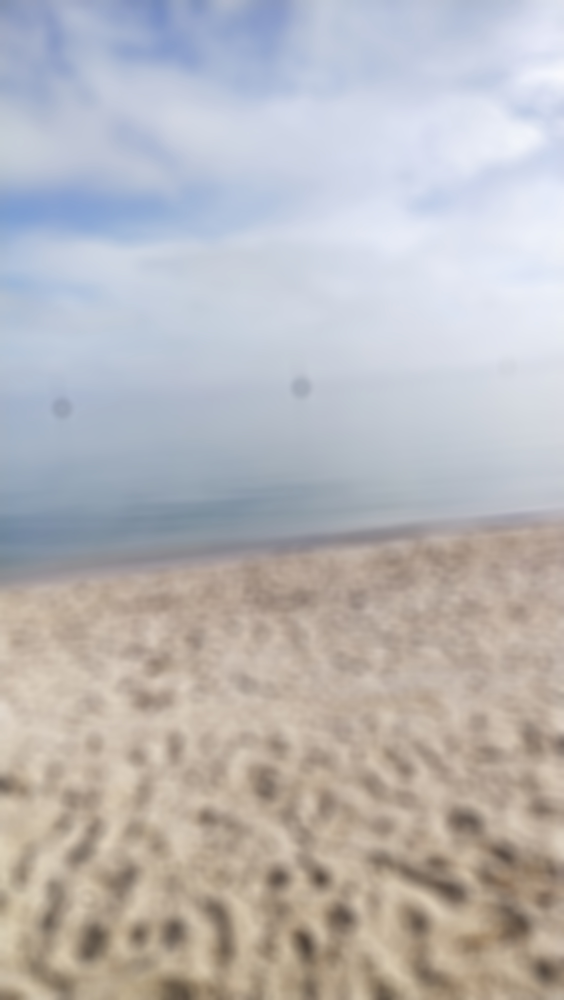

Blur Tool
Step 1: On the top toolbar you will see a button that's called "Filter". Click on it.
Step 2: You will see a dropdown menu. On the dropdown menu click on "Blur"
Step 3: We will be using normal blur so click on "Normal Blur"
Now you will see that the image you put onto the page is now blurred and you can click the same button again to blur the image even more.

Now go to the top of this website and select keyboard shortcuts to learn quick ways to do tasks in Photoshop.